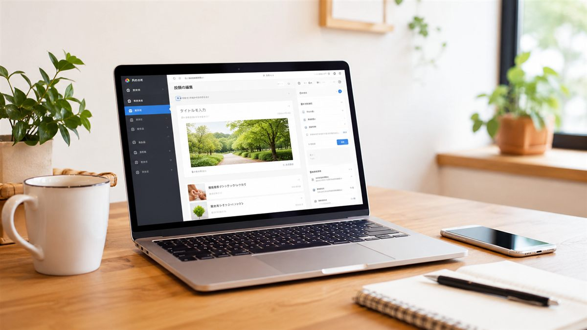

福祉ITパートナーの情報発信を始めます
はじめまして。福祉ITパートナーの上原健太です。
このたび、福祉事業所・団体の皆さまに向けて、ホームページづくりやIT活用に関する情報をお届けするため、公式サイトでの情報発信を始めました。
福祉の現場では、日々の支援、利用者さんやご家族への対応、関係機関との連携など、優先すべきことが多くあります。
その中で、
- ホームページを作りたいが、何から始めればよいか分からない
- 今あるホームページを更新できていない
- 見学・体験の問い合わせを分かりやすくしたい
- GoogleフォームやGoogleドライブを活用したい
- AIを使って文章作成や業務を少しでも効率化したい
といったお悩みを抱える事業所や団体も少なくないと感じています。
福祉ITパートナーでは、ホームページ制作をはじめ、Googleフォーム、Googleサービス、生成AIなどの活用を通じて、福祉の現場を支える方々が本来の支援により時間を使えるよう、お手伝いしていきます。
このブログで発信していくこと
今後は、主に次のようなテーマを取り上げる予定です。
- 福祉事業所のホームページで伝えるべき内容
- 見学・体験の問い合わせにつながる導線づくり
- 就労継続支援B型や就労移行支援の情報発信
- GoogleフォームやGoogleドライブの活用方法
- 福祉現場でのAI活用のヒント
- 個人情報に配慮したIT活用
- 小規模な事業所・団体でも始めやすいデジタル化
専門用語をできるだけ避けながら、すぐに役立てやすい内容を分かりやすくお伝えしていきます。

福祉のことを理解したIT支援を
ホームページやITツールは、導入すること自体が目的ではありません。
利用者さん、ご家族、支援機関、地域、そして職員の皆さまとのつながりをより良くするための手段です。
精神保健福祉士として福祉に関わる立場から、制度や支援の現場にも目を向けながら、「使いやすい」「伝わりやすい」「相談しやすい」IT支援を大切にしていきます。
ホームページ制作やリニューアル、Googleフォーム、AI活用などについて、「まずは話を聞いてみたい」という段階でも大丈夫です。
福祉ITパートナーが、福祉の現場にITという安心を届けるお手伝いをしていきます。
今後とも、どうぞよろしくお願いいたします。